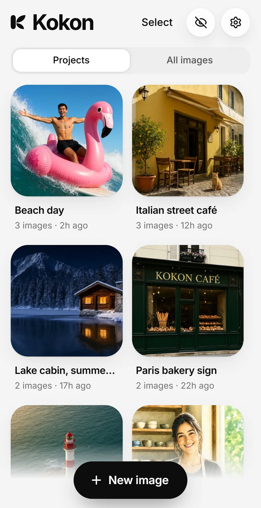
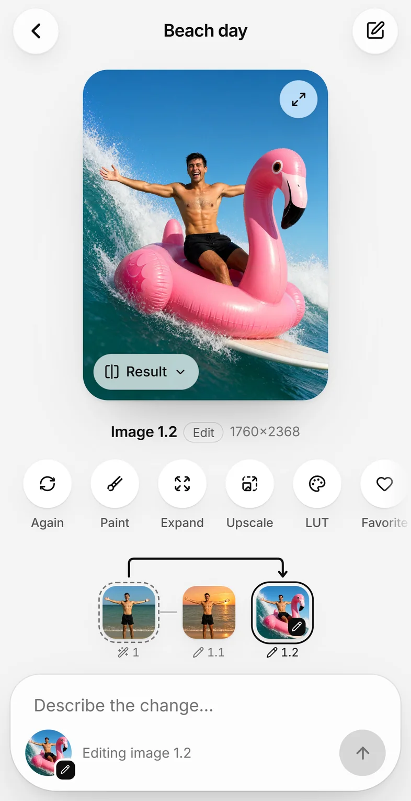

Use Kokon from your phone, or run it as a server
Your computer with the graphics card makes the images. Your phone, tablet or laptop uses Kokon in a browser, on the same network or, through a VPN, from anywhere. Kokon 0.11 or newer. Updated October 24, 2026.


How it works
Kokon runs a small service on the computer with the graphics card. In 0.11 that service can also serve Kokon's interface to other devices: open its address in a browser, sign in with a password, and you get Kokon, with a layout of its own on a phone: your projects first, a swipe between versions, a screen of its own for writing the prompt. Photos you pick on the phone are uploaded to the computer, the computer makes the image, and the result lands in its gallery. You can download any result to the device you are holding.
There is no cloud and no Kokon account. The phone talks to your computer directly, over your own network. (Coming from ComfyUI with --listen? See how the two compare.)
On your home network
- On the computer running Kokon, open Settings → Other devices.
- Choose a password (at least 8 characters) and click Set and turn on.
- Settings shows a QR code and an address such as
http://192.168.1.20:39152. Scan the code with the phone's camera, or type the address in any browser on the same network, and enter the password. That browser stays signed in for 90 days. - To keep Kokon on the home screen like an app: on iPhone, Share → Add to Home Screen; on Android, the browser's menu → Add to Home screen.
The first time, Windows or macOS may ask whether Kokon can use the network. Allow it on private networks only, and on Windows make sure your home network is set as Private.
The router can give the computer a new address after a restart, and the saved icon then stops working. Reserve the address in the router (often called "DHCP reservation"), or scan the QR code again.
This works while Kokon is open on the computer. To keep it running without the window, use a server, below.
On a Linux server without a screen
kokon-service comes with the Linux packages (.deb and .rpm). Set the password once, then start it with access on:
kokon-service --set-password # asks twice, nothing is shown while you type
kokon-service --persistent --remote # keeps running; the interface is on port 39152Open the address it prints in a browser and follow the setup: it downloads the engine and the model (about 12 GB) once. A password changed while the service runs applies within a few seconds.
In Docker (NVIDIA)
Each release publishes the image ghcr.io/gabrielelozupone/kokon. It holds no models, so it stays small; the setup downloads them once into a volume. You need an NVIDIA card with the proprietary driver, Docker with Compose, and the NVIDIA Container Toolkit. On Windows it works through Docker Desktop with WSL 2.
mkdir kokon && cd kokon
curl -fsSLO https://raw.githubusercontent.com/GabrieleLozupone/kokon/master/docker/compose.yaml
docker compose up -d
docker exec -it kokon kokon-service --set-passwordThen open http://<the server's address>:39152. The models, the settings and the saved images live in three volumes, so they survive updates:
docker compose pull && docker compose up -d # update to a new version
docker logs -f kokon # what the service is doingThe latest tag follows every release; write :0.11 in compose.yaml to stay on 0.11.x. An image for AMD and Intel cards (Vulkan) will follow once it can be tested; until then, use the Linux packages. The full reference is in docs/docker.md.
From outside your home: Tailscale
Never open Kokon's port on your router: anyone on the internet could then try the password. Use a private network instead. Tailscale is free for personal use and takes a few minutes:
- Install Tailscale on the computer running Kokon and on your phone or laptop, and sign in with the same account on both.
- Turn on access in Kokon, as above.
- With Tailscale on, open
http://<computer name>:39152on the other device, for examplehttp://gaming-pc:39152.
Tailscale encrypts the traffic between your devices, wherever you are. With HTTPS turned on for your tailnet, tailscale serve --bg 39152 on the Kokon computer gives you an https:// address, and the browser then also lets Kokon copy images to the clipboard. WireGuard, ZeroTier or your router's own VPN work the same way.
What is protected
- Off by default. Nothing listens on the network until a password exists and access is on.
- The password is stored only as an Argon2id hash. After 5 wrong tries in a row that device waits 1 minute, then longer after each new mistake, up to 15 minutes.
- A browser can do what the interface does: create, edit, the gallery, Settings. It cannot read or write files on the computer by path, change folders or model files, or turn network access on or off.
- Kokon's own token, used by the desktop app and the MCP server, works only on the computer itself.
- Plain HTTP on the network. Fine on your home Wi-Fi; on a shared network (office, café) someone nearby could read the traffic. Use Tailscale there, which encrypts everything.
What is different in a browser
- Adding photos: Edit a photo in a new project (on a phone, from its photos or camera), the image button next to the prompt, dropping files on the page, or pasting.
- Saving: Save puts the image on the device you are using. On an iPhone it shows the picture: press and hold it, then tap Save to Photos.
- On the computer only: showing files in a folder, the logs, LoRA and colour LUT files from disk, choosing model files, and updates.
It does not connect
- Both devices must be on the same network (or both on Tailscale), and Settings → Other devices must show the address.
- A firewall may block the port. Windows: set your home network as Private, then allow Kokon on private networks in Windows Security → Firewall. Linux with ufw:
sudo ufw allow from 192.168.0.0/16 to any port 39152. - Another program may use port 39152: Settings shows the error, and you can choose another port there.
Still stuck? Open an issue with Settings → Diagnostics → Copy.
Try it
Free and open source for Windows, macOS and Linux, and as a Docker image for NVIDIA.